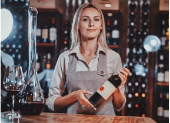

A Vinheria Agnello é uma empresa familiar que iniciou suas atividades em São Paulo há mais de 15 anos. Fundada por Giulio, e hoje administrada junto com sua filha Bianca, a vinheria nasceu com o propósito de oferecer não apenas vinhos de qualidade, mas também uma experiência diferenciada no atendimento.
Desde o início, um de nossos grandes diferenciais sempre foi a proximidade com o cliente. Nossos vendedores atuam como verdadeiros consultores, orientando sobre:
- Características de cada tipo de uva e região produtora;
- Informações sobre vinícolas e rótulos;
- Sugestões de harmonização com diferentes pratos;
- Indicações de vinhos para ocasiões especiais.
|
A pandemia trouxe desafios inesperados e acelerou a necessidade de transformação digital. Muitos de nossos clientes migraram para o comércio online, e para acompanhar essa mudança, decidimos dar início ao nosso portal de e-commerce — sempre mantendo o compromisso de oferecer ao público a mesma qualidade e atenção do atendimento presencial. |
 |
Acreditamos que o mundo do vinho é vasto e fascinante, mas também pode ser desafiador para iniciantes. Por isso, nos dedicamos a guiar cada cliente em sua jornada, ajudando a transformar cada garrafa em um momento único.
- Mais de 6.000 variedades de uvas no mundo;
- Diferenças de sabor e aroma conforme solo, clima e safra;
- Técnicas de cultivo, fermentação e armazenamento que tornam cada vinho único.
Nosso compromisso é unir tradição, conhecimento e inovação, criando uma experiência que respeita tanto o consumidor leigo que busca sua primeira garrafa quanto o apreciador mais exigente em busca de rótulos raros.